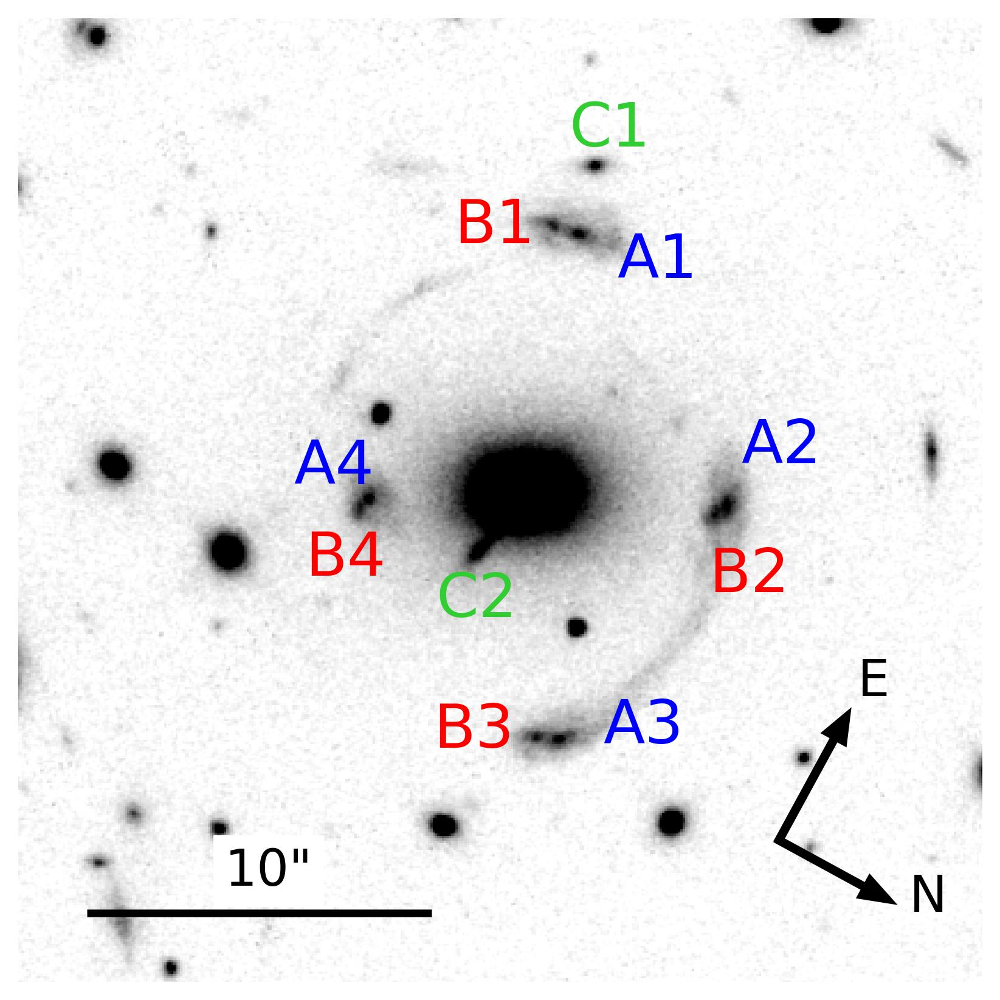

Strong lensing modeling
How galaxy-scale systems allow us to study the geometry of the Universe?
Bolamperti et al. 2023a
Galaxy-scale strong lensing systems
Galaxy-scale strong gravitational lenses represent a powerful tool in several extragalactic astrophysics research fields. When two or more sources are multiply imaged by the same lens galaxy, it is possible to measure the values of some cosmological parameters describing the geometry of the Universe.
Although more massive lenses, like galaxy clusters, can generate dozens of multiple images from sources in a large redshift range, they have a complex total mass distribution which includes several mass components, that might introduce degeneracies between the model parameters.
As a result, the discovery of ultra massive galaxies that act as lenses for two or more background sources plays a key role in measuring the values of cosmological parameters through strong lensing modeling.
In fact, by considering the ratio of the two Einstein radii observable in a double-source system, one can constrain the value of $\Omega_m$ independently of that of $H_0$. The presence of more than two multiply-imaged sources can further reduce the uncertainties on the total mass profile of the lens and on the cosmological parameters, but is extremely rare, with only a few known cases to date.
The next system: SDSS J0100+1818
 I studied a unique deflector, SDSS J0100+1818, analyzing its total and baryonic mass distributions. I started working on this system during my Bachelor's and, after working on a different project (still lensing-related) in my Master's, I further analyzed it in the last year, and it worths the attention. In fact, this system is composed by an ultra-massive early-type galaxy at $z=0.581$, with uncommon stellar velocity dispersion of ($450 \pm 40$) km s$^{-1}$, surrounded by ten multiple images of three background sources, two of which (A and B) spectroscopically confirmed at $z=1.880$. Exploiting high-resolution HST photometry and VLT/X-shooter spectroscopy I conduct a strong lensing analysis with the software GLEE to reconstruct the observed position of the images first, and the complex surface brightness distributions of the background sources over approximately 7200 HST pixels then (see image below).
We found that:
- We have combined the available multiband photometry from PanSTARRS, NOT, and HST to model the spectral energy distribution of the main lens galaxy. The best-fit model results in a stellar mass value of $(1.5 \pm 0.3) \times 10^{12}$ M$_{\odot}$.
- We have used the public software pPXF to estimate the value of the stellar velocity dispersion $\sigma$ of the main lens galaxy from its X-Shooter spectrum
- With the point-like source modeling, we have found a total mass value projected within the Einstein radius (of approximately 42 kpc) of $(9.1 \pm 0.1) \times 10^{12}$ M$_\odot$. The source C is predicted at $z_C=1.72$. The best-fit value of the logarithmic slope is shallower than for a singular isothermal profile.
- We confirmed the results, with much more accuracy, by adopting the extended modeling.
- We have reconstructed the surface brightness distributions of the background sources and measured their half-light radii from the luminosity profiles. We have successfully recovered the two-peaked structure of the AB source, with a small physical separation of about 2 kpc at $z=1.880$. We have measured values of the effective radius between $0.5$ and $1$ kpc at $z=1.880$ for the A and B components, depending on the adopted model. Our measured sizes are in agreement with those of strongly lensed clumps in star-forming galaxies at $z\sim 1-3$, with similar moderately-magnified sources.
New MUSE data: an accepted and observed 5-hours proposal as PI
SDSS J0100+1818 has been targeted with VLT/MUSE (program 0110.A-0248, PI: A. Bolamperti) to obtain integral field spectroscopy of the system to identify other galaxies on the lens plane, spectroscopically confirm the redshift of system C, enhance our study on the total and dark-matter mass profiles, and measure the stellar velocity dispersion profile of the main deflector. In the 1'$\times$1' MUSE field of view we find other 18 galaxies at $z \approx 0.58$, confirming that SDSS J0100+1818 is not an isolated galaxy, but it is more likely the brightest galaxy of a group residing in a dark matter halo. Furthermore, we confirm the stellar velocity dispersion measured with X-shooter, but we are now able to derive its radial profile. Most importantly, we spectroscopically confirm that C1 and C2 are two multiple images of the same background source and we identify, through their Lyman-$\alpha$ emission, two additional sources at higher redshift, each with four multiple images.
Want to read more?
You can find more details, and useful figures, in our recently published paper, Bolamperti et al. 2023a.References
Collett et al. 2014, 2017, 2020; Smith & Collett 2020; Tu et al. 2009; Tanaka et al. 2016; Schuldt et al. 2019; Wang et al. 2022; Suyu et al. 2010, 2012; Jullo et al. 2010; Caminha et al. 2016; Grillo et al. 2015, 2020; Bergamini et al. 2020, 2022; Schneider2014.